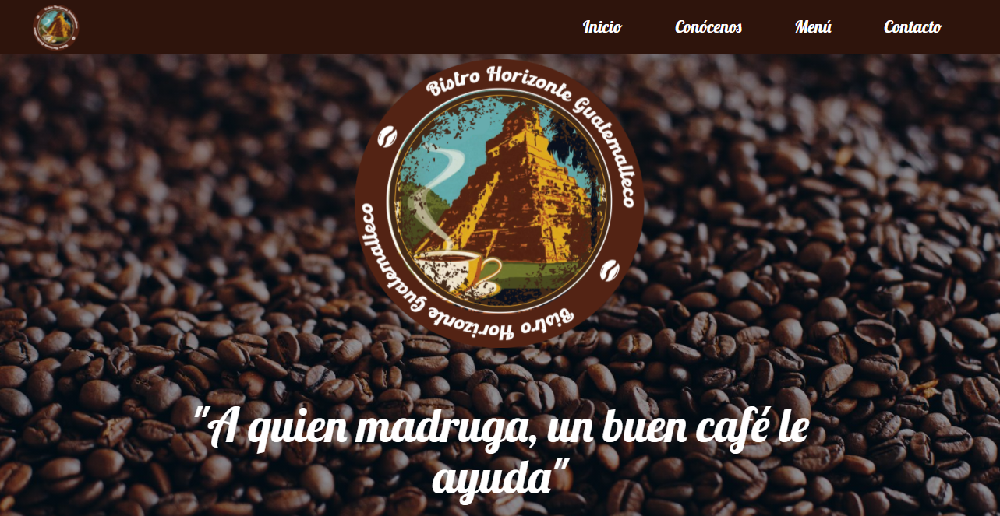
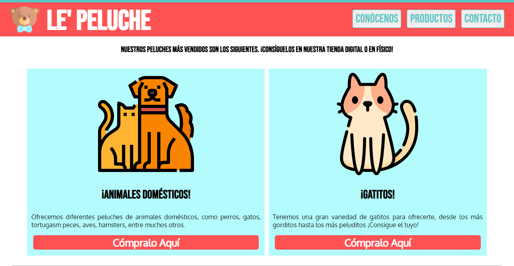
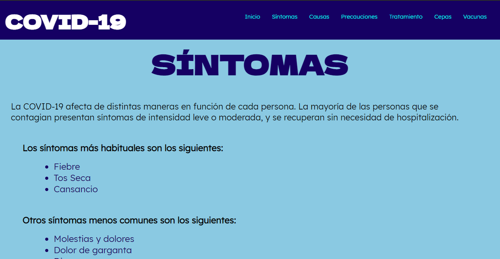

Estos son los proyectos que he realizado

Página Web Bistro Horizonte Guatemalteco
Este proyecto lo realicé en grupo hace poco para un trabajo de unas empresas, en nuestro caso fue de café y nos tocó realizar la página web para la misma.
Ver Proyecto

Página Web Le' Peluche
Esta página web la realicé para mi segundo Laboratorio de Práctica Supervisada, la cual fue basada completamente en una empresa de peluches ficticia.
Ver Proyecto

Página Web sobre el Covid-19
Esta página web la realizamos en grupo para nuestro primer exámen de Computación y Programación del año, la cual la hicimos sobre el covid-19, yo más específicamente la parte de síntomas.
Ver Proyecto